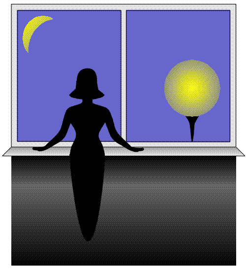

| Home | Greeting | Great land stories | Grot of poetry | Graphic album | Grandiose gadgets | Groan of the mind | Back | Next |
Страница 6.
Бывает чудо лишь однажды...
Баллада о розе и о потеряной любви
Лежала роза на дороге...
Никто и не смотрел под ноги,
И не желал ее поднять.
И оставалось ей лежать...
Один лишь ты остановился...
Ты к розе низко наклонился,
Ее в ладони нежно взял
И ласково к груди прижал.
Принес ее домой с морозу
И отогрел дыханьем розу,
Напиться вдоволь дал воды:
Цветы без влаги - не цветы.
Ты так выхаживал цветочек!
Лелеял каждый лепесточек!
И снова в розу жизнь вселил.
И... очень сильно полюбил...
Шипов ее ты не боялся,
Ты ей всем сердцем доверялся,
Как доверялась и она
Лишь одному тебе сполна.
Только тебе она открылась!
Цветком прекрасным распустилась,
Благоуханьем одарив
И чудным светом озарив!
Но время шло... Привык ты к счастью...
Все меньше проявлял участья
К судьбе цветка... А красота
Ведь без заботы уж не та...
Все меньше розой любовался,
Делал все больше предавался.
И воду забывал менять...
И роза стала увядать...
Поблекли, ссохлись лепесточки,
Скрутились, сморщились листочки...
Хоть безнадежно, но любя,
Она еще ждала тебя.
Пила она свои же слезы...
Понурая головка розы
Не излучала боле свет...
Тебя ж, как прежде, - нет и нет...
Ты слишком поздно спохватился,
Как только понял, что лишился
Того, о чем всю жизнь мечтал...
И вот тогда ты зарыдал...
Бывает чудо лишь однажды...
Не суждено воскреснуть дважды...
Любовь - цветок, ее забыть -
Навеки, значит, погубить.
1996г., 11 марта
Ожидание
Уж полчаса, как я в окно смотрю...
Подмигиваю тупо фонарю...
В ответ он расползается в ночи,
В которой так темно и все молчит.
Молчит квартира и молчит весь дом.
Молчит дорожка под моим окном.
Дорожка та, где ходишь ты всегда,
Безмолвна, одинока и пуста.
Пройди по ней, под светом фонаря!
И я пойму: ждала тебя не зря.
Я буду знать, что вместе мы теперь.
Я радостно тебе открою дверь...
И ты войдешь, прижмешь меня к себе...
И буду благодарна я судьбе.
...Но час уже, как я в окно смотрю...
И все одна... И вот опять курю...
1996г., 20 марта

По временной оси прошаркал день,
Прихвамывая, часто спотыкаясь...
У финишной черты он встретил тень, -
Тень сумерков, полнее выражаясь.
И сумерки поплыли по оси,
Но как-то тяжело и неумело.
И что же дальше? - хочется спросить.
А дальше, наконец, совсем стемнело.
И к эстафете подключилась ночь,
И кубарем громоздко покатилась.
Она бы и ускориться не прочь, -
Да только ничего не получилось.
На очереди утро... Заждалось...
В бездействии оно уж засыпало.
И даже развернуть его пришлось,
Не то бы в прошлое оно заковыляло.
И нудно так все сызнова пойдет.
И что поделать с этим, ты не знаешь...
Однако, время движется вперед.
Кто виноват, что ты его теряешь?
1996г., 21 марта
Гори, гори, моя звезда!
Гори, звезда моя на небе!
Эх, показать ее тебе бы! -
Да ты посмотришь не туда.
И вряд ли ты меня поймешь...
"Вот, - скажешь, - звездочки считает...
О всякой чепухе мечтает,
За правду принимая ложь.
Взгляд устремила в небеса!
Про Землю напрочь забывает,
Где с головой чудес хватает!
А там... какие чудеса?..
Глядит в ночную пустоту,
А что вокруг, - не замечает.
Что хочет, - и сама не знает.
Смотрите-ка, нашла звезду.
А то, что Космос - это все:
И та Земля, где она бродит, -
Едва ли до нее доходит.
Куда-то ввысь ее несет.
Полет, представим, совершит
Она к своей звезде поближе.
Потом куда захочет? - Выше?
Иль снова к Солнцу заспешит?
Ведь Солнце - та же есть звезда...
Размеров, правда, несолидных...
Да... Там ее не будет видно,..
Хоть бы и та же высота.
А, может быть, ее звезда,
Как наше Солнце? Карлик, тоже?
С одной другую видно, может? -
...Какая разница тогда?!!
Что здесь! - Что там! - Одно и то ж!
Повсюду Космос необъятный!
И что ей надо, непонятно?!!"
- Я ж говорила, - не поймешь.
1996г., 21 марта
Когда я от тебя уйду,.. -
Ты скоро обо мне забудешь
И наволочку рвать не будешь
В ночном, неистовом бреду.
Смиришься ты совсем легко
С такой неважною потерей.
Скучать не станешь ты, не верю, -
Когда я буду далеко.
Тебе, конечно, хватит сил,
Чтоб одолеть души стенанья.
Прогонишь прочь воспоминанья
О том, что ты меня любил.
Когда я от тебя уйду,.. -
Уйду, - любя... Уйду, - страдая...
О счастии всю жизнь мечтая,
Но зная: счастья не найду...
Когда я от тебя уйду,
Одну себя во всем карая, -
Я буду мучиться, сгорая,
Одна...
за нас двоих...
в аду...
1996г., 25 марта
Открыла глаза я,
Заранее зная,
Что тьма ожидает меня;
Безумно желая,
Во сне чтоб жила я,
Не видя реальности дня.
Но мне показалось,
Иль я ошибалась:
От сумрака нет и следа.
Уже не во сне я,
Но как-то виднее,
Светлее вокруг, чем всегда.
Отдернула штору...
Я думала, взору
Предстанет скопление туч.
Но в небе, как в море,
На синем просторе
Купается солнечный луч.
Я только вздохнула,
Как вдруг захлестнула
Меня голубая волна!
И песней небесной,
И сказкой чудесной
Наполнила душу весна!
И сердце стучаться
Заставило счастье!
И радость, как Солнце, дарить!
Хотелось смеяться
И плакать... Признаться,
Опять захотелось мне жить...
1996г., 1 апреля
| Top | Home | Greeting | Great land stories | Grot of poetry | Graphic album | Grandiose gadgets | Groan of the mind | Back | Next |